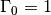

skrf.media.freespace.Freespace¶
- class skrf.media.freespace.Freespace(frequency, ep_r=1, mu_r=1, *args, **kwargs)¶
Represents a plane-wave in a homogeneous freespace, defined by the space’s relative permativity and relative permeability.
The field properties of space are related to a disctributed circuit transmission line model given in circuit theory by:
Circuit Property Field Property distributed_capacitance real(ep_0*ep_r) distributed_resistance imag(ep_0*ep_r) distributed_inductance real(mu_0*mu_r) distributed_conductance imag(mu_0*mu_r) - This class’s inheritence is;
- Media-> DistributedCircuit-> Freespace
Attributes
| Y | Distributed Admittance,  |
| Z | Distributed Impedance,  |
| characteristic_impedance | Characterisitc impedance |
| propagation_constant | Propagation constant |
| z0 | Port Impedance |
Methods
| Z0 | Characteristic Impedance,  |
| __init__ | Freespace initializer |
| capacitor | Capacitor |
| delay_load | Delayed load |
| delay_open | Delayed open transmission line |
| delay_short | Delayed Short |
| electrical_length | calculates the electrical length for a given distance, at |
| from_Media | Initializes a DistributedCircuit from an existing |
| from_csv | create a Media from numerical values stored in a csv file. |
| gamma | Propagation Constant,  |
| guess_length_of_delay_short | Guess physical length of a delay short. |
| impedance_mismatch | Two-port network for an impedance miss-match |
| inductor | Inductor |
| line | Matched transmission line of given length |
| load | Load of given reflection coefficient. |
| match | Perfect matched load ( ). ). |
| open | Open () |
| resistor | Resistor |
| short | Short ( ) ) |
| shunt | Shunts a Network |
| shunt_capacitor | Shunted capacitor |
| shunt_delay_load | Shunted delayed load |
| shunt_delay_open | Shunted delayed open |
| shunt_delay_short | Shunted delayed short |
| shunt_inductor | Shunted inductor |
| splitter | Ideal, lossless n-way splitter. |
| tee | Ideal, lossless tee. |
| theta_2_d | Converts electrical length to physical distance. |
| thru | Matched transmission line of length 0. |
| white_gaussian_polar | Complex zero-mean gaussian white-noise network. |
| write_csv | write this media’s frequency, z0, and gamma to a csv file. |